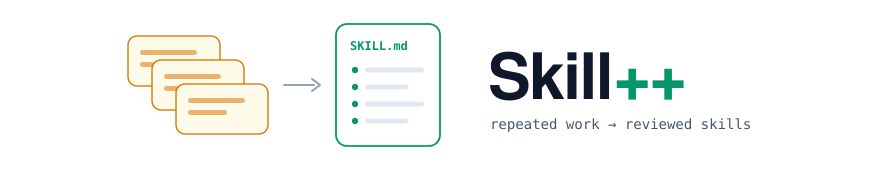
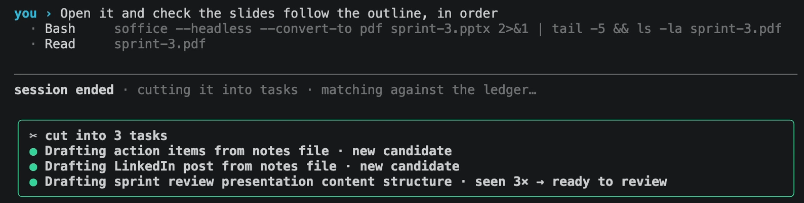
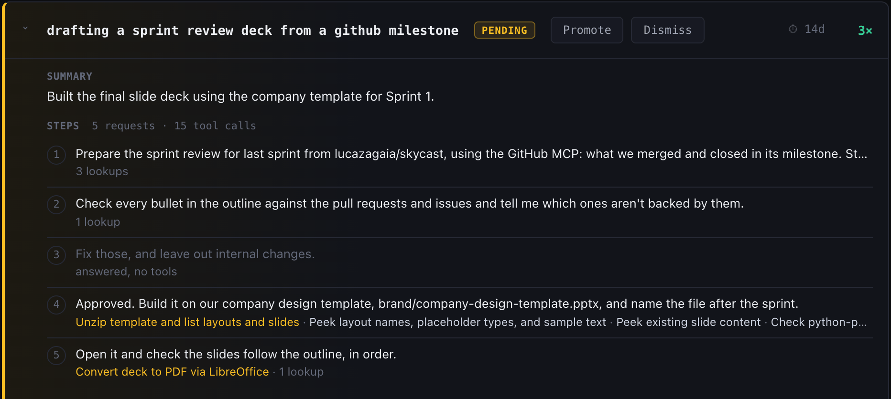
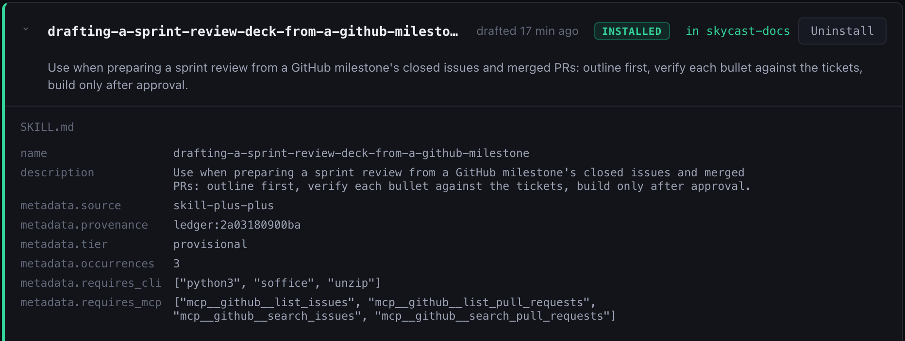
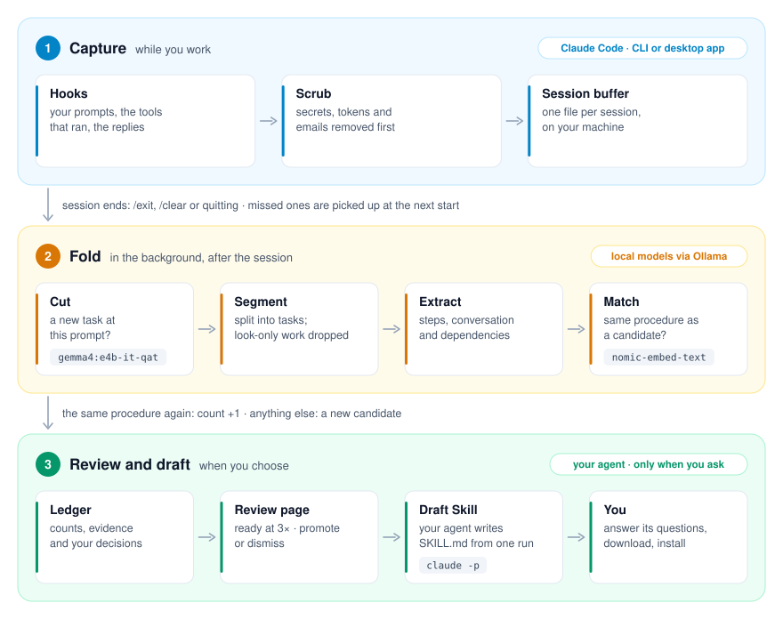
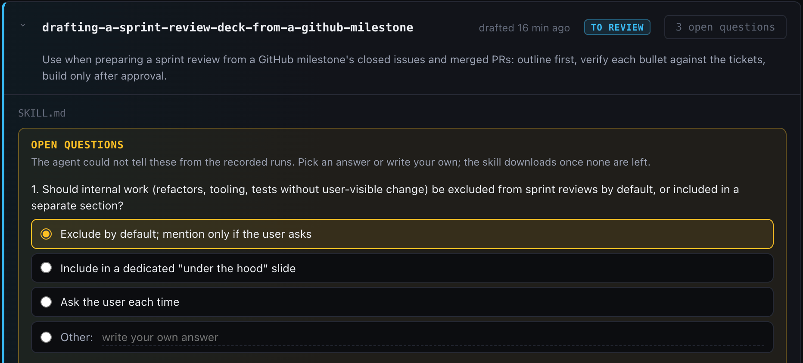
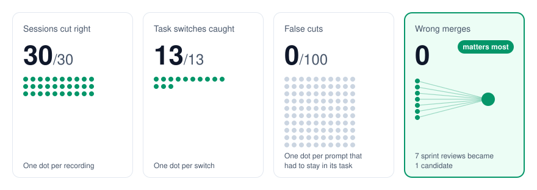
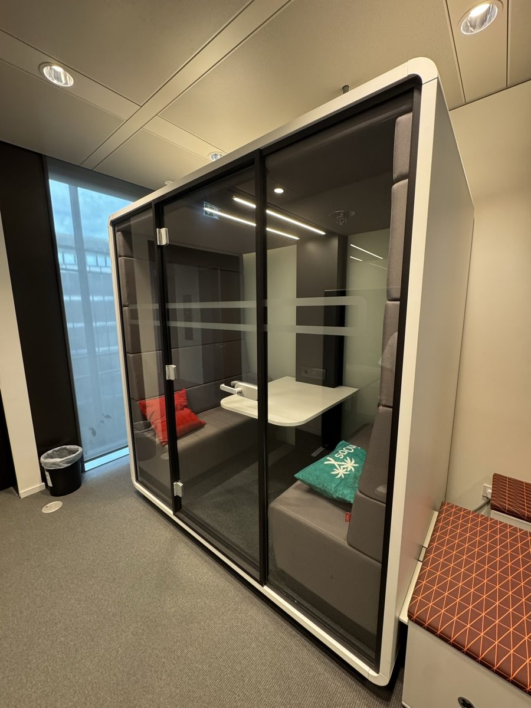

Spot the work you keep repeating. Turn it into skills.¶
You do the same jobs with Claude again and again: the sprint deck, the release notes, the weekly post. Skill++ notices. After the third time, it writes down how you do it, so Claude does it your way from then on, and so does everyone on your team.
An open-source project by Concept Reply.
🆓 Free and private. It runs on your laptop; nothing leaves it until you ask for a skill.
📏 Tested on 30 real sessions anyone can replay: it never mixed up two different jobs. → Under the hood
⚡ Three commands, no account. → Quick Start
Why · See it · How it works · What it costs · Quick Start · Your first skill · Under the hood · The numbers · When to use · Docs
🌍 Why this exists¶
Every team has procedures it runs again and again: the sprint review deck,
shipping a small feature with its tests, turning a document into a talk. An agent skill
(SKILL.md) makes an agent follow such a procedure the same reliable way every
time, but almost nobody writes them: by the time a procedure is worth a skill,
you have done it three times and moved on.
Skill++ finds those procedures for you. It watches your Claude Code sessions, with no tags, rules or notes from you, notices when you repeat the same kind of work within a project, and shows it to you as a candidate. Promote one, and your own agent drafts the skill from what you actually did. Nothing is installed without you.
Skills reach your team today: install one into the repo's .claude/skills/,
commit it, and everyone working in the repo has it. Where it is going:
skills shared across a team, so that a procedure one person worked out is done
the same way by everyone: faster, and without the mistakes each person would
otherwise make on their own.
👀 See it¶
Every sprint, the same review deck: read what was merged and closed on GitHub, outline the slides, check every bullet against the tickets, build it on the company template. The third time, Skill++ has it ready.
① You work as usual. Three jobs in one chat: action items, a LinkedIn post, the sprint review. When the session ends, a local model cuts it into its tasks and counts the sprint review a third time.

② It shows you the repeat. On the review page, the candidate is at 3× and ready to promote, with every request you made and the tools each one used.

③ Your agent writes the skill. Drafted from the first run: when to use it, the procedure, and the GitHub MCP tools it needs. Installed in the project, where Claude Code picks it up.

This is the session from the video above: real Claude Code, with the GitHub MCP. It is one of the public recordings (6b143dec-demo-take.json), so you can replay what it did.
🔧 How it works¶
A local model cuts your Claude Code sessions into tasks and spots the procedures you repeat; on the third run, your own agent writes one down as a skill. Nothing about how you work changes.

- Capture. While you work, hooks record your prompts, the tools that ran, and the agent's replies into one file per session. Secrets, tokens and emails are scrubbed before anything is written. When the session ends, it is handed on; a session that could not be (the app was quit, say) is picked up the next time one starts.
- Fold. A background worker asks a local model, at each point where you typed something, whether a new task started there, and splits the session into tasks. Each task is compared with the candidates of the same project: the same procedure again adds to its count, anything else becomes a new candidate.
- Review and draft. Seen three times, a candidate is ready on the review
page, where you promote or ignore it. Draft Skill hands its first run to
your own agent (
claude -pby default), with a note from you if you like. The agent writes the procedure in its own words, and anything it could not tell from the run becomes an open question. Answer them, then install the skill into the project it came from.
💸 What it costs: nothing, until you ask¶
Watching, cutting and matching run on two open models on your machine
(gemma4:e4b-it-qat and nomic-embed-text, through Ollama): no tokens, no API
calls, and nothing leaves your laptop. The only call to a frontier model is your
own agent writing the skill: once per draft or revision, and only when you press
Draft Skill or Revise. Only then does that one run's conversation go to
it.
⚡ Quick Start¶
You need macOS or Linux (Windows isn't supported yet; WSL may work but is
untested), Python 3.10+ (or uv, which brings its
own), Claude Code logged in,
and Ollama running (brew install ollama on a Mac).
pipx install skill-plus-plus # or: uv tool install skill-plus-plus
skill-plus-plus install --project ~/code/my-repo --apply # hooks, slash commands and the two local models
skill-plus-plus doctor # everything green?
Then start a new Claude Code session in that repo (a new chat in the CLI, or a new Code session in the desktop app) and work as usual.
More ways in · every project, dry runs, removing it, from a clone
- `install` without `--apply` only shows what it would do, downloads included. Your settings file is backed up before it is changed. - `--user` instead of `--project` captures every project on the machine. - The two models are about 6.4 GB on disk, and folding a session takes about 7 GB of free memory. Skill++ only starts when that fits with 2 GB to spare, and otherwise waits, so it never pushes your machine into swap ([Memory](usage.md#memory)). `--no-models` leaves Ollama alone. - `skill-plus-plus install --project ~/code/my-repo --remove --apply` takes the hooks and slash commands out again. - The latest `main`, before it is released: `pipx install git+https://github.com/skill-plus-plus-org/skill-plus-plus`, or the same URL with `uv tool install`. - With uv, install it as a tool (`uv tool install`), not with `uvx`: `uvx` runs a temporary copy that uv deletes when it cleans its cache, and the hooks would go with it, so `install` refuses to run from there. - From a clone: `pip install -e .`, or run `python3 bin/skill-plus-plus` without installing anything.
🕐 Your first skill¶
- Work as usual. Each session is cut into tasks when it ends, in the background.
- Open the review page:
skill-plus-plus web. It is served on127.0.0.1and only this machine can reach it. - Pick the project in the menu at the top right.
- Candidates lists what you repeated, most-seen first, each with a summary and its steps grouped under the requests they served (② above). At three runs, a candidate can be promoted or ignored.
- Promote it, then press Draft Skill. The optional note tells the agent what the later runs taught you: it reads only the first.
- Answer its open questions on the Skills tab, where the draft waits under its project: pick a suggested answer or write your own. Each answer is folded back into the skill; Revise sends any other instruction.

- Install in your project (③ above; commit
.claude/skills/to share it). From then on the folder is the skill. - Keep it current on the same tab: every skill in the project, three to a row. Click one to read it, or have your agent edit it: you see the change as a diff before anything is written, and can undo it right after.
Faster than three repeats: SKILL_PLUS_PLUS_RECURRENCE=1 makes a candidate ready the
first time it is seen.
🧠 Under the hood¶
Three problems stand between a chat log and a skill. The first two are solved on your machine by two small open models, with no tokens and no API calls; the third is one call to your own agent. Every number below is measured on the 30 public recordings in tests/fixtures/sessions/, which anyone can replay.
1. Where does one task end?¶
One chat is rarely one task. At every message you typed between two tool calls,
Skill++ asks a local model (gemma4:e4b-it-qat, through Ollama) one question:
113 questions for 415 tool calls across the recordings. The question sets the
earlier task and your new message side by side in named sections, says when the
earlier work ended in a commit, says what counts as a new task, and asks for one
word. It runs in the background after the session ends, in under a second and a
half per message.
Every one of the 13 task switches found, 0 false cuts in 100 places where a review, a correction or a follow-up must stay in its task.
2. Is this the same procedure again?¶
Each task is embedded (nomic-embed-text) as its conversation: your requests,
the first 300 characters of each reply, the skills it used and the kinds of
files it produced. File names are masked, so what a run was about does not
decide what it was. A task joins a candidate only at a cosine similarity of
0.85 or more (0.93 when there is no conversation to compare): a duplicate you
can see is cheap, and a wrong merge would mix two procedures into one skill.
0 wrong merges, the number that matters most here: a run counted toward the wrong candidate would make a skill of two procedures. 5 of the 8 repeated procedures became a single candidate, the seven sprint reviews among them.
3. What goes into the skill?¶
Your own agent (claude -p by default, or any agent CLI) drafts it from the
candidate's first run and your note: the method, in its own words, not the
subject of that run. What it cannot tell from the run becomes an open question,
at most three, each with three suggested answers, and your answers are folded
back in. The result is a standard SKILL.md, and it keeps working without
Skill++. The CLIs and MCP tools the run needed become the skill's requirements,
and a skill whose requirement is missing says so and stops instead of
improvising a workaround.
The method was right in all 4 drafts checked, by a Claude judge that has to quote the line of the draft behind every yes.
And the parts you don't see¶
- Keys, tokens, cookies, connection strings and email addresses are scrubbed before anything is written.
- A session the app was quit on is picked up the next time one starts.
- The review page listens on
127.0.0.1only and refuses requests from other pages. - 530 tests run in about ten seconds, with no model. The research log keeps every experiment, the failed ones too.
📊 The numbers¶
Measured on the 30 public recordings of code and knowledge work in
tests/fixtures/sessions/, which anyone can replay
with the commands below, with the defaults (gemma4:e4b-it-qat,
nomic-embed-text). Eight of them are the recordings of the video above, which
were held out while the judge's question was tuned. The weak rows stay in the
tables.

Where one task ends: 30 of 30 sessions right; 13 of 13 task switches caught; 0 false cuts over 100 prompts, reviews, corrections and side questions included.
| Check | Code | Knowledge work |
|---|---|---|
| one task, several follow-ups | 7/7 | 11/11 |
| reviews and corrections stay in the task | 1/1 | 10/10 |
| a switch nobody announced | 1/1 | 1/1 |
| an announced switch | 1/1 | 1/1 |
| three tasks in one chat | 1/1 | 3/3 |
| a second task of the same kind | 1/1 | – |
Do repeats become one candidate: 0 wrong merges. This is the number that matters most. A wrong merge counts a run toward the wrong candidate: it looks repeated before it is, and the skill drafted from it mixes two procedures. A missed merge only leaves a second candidate you can see and ignore.
| Procedure in the recordings | Runs | Candidates |
|---|---|---|
| sprint review deck from GitHub | 7 | 1 |
| talk deck from docs | 4 | 1 |
| release notes from a changelog | 3 | 1 |
| refactor, tests kept green | 3 | 1 |
| Makefile for a project | 2 | 1 |
| LinkedIn post from notes | 6 | 2 |
| action items from meeting notes | 5 | 2 |
| a code feature with tests (seven different features) | 12 | 7 |
That is why Skill++ keeps a second candidate when in doubt.
Drafts: on four recorded sessions, every draft's method was right, checked by a Claude judge that quotes the line of the draft behind every yes. All four say when to use the skill; none leaks a path from the run.
Reproduce them with score.py, recurrence.py,
tests/benchmarks/judge_replay.py and tests/benchmarks/draft_check.py. The
research log has every measurement behind them, and more,
including sessions of our own work that we cannot publish.
🧭 When to use · when to skip¶
Good fit if you repeat procedures in Claude Code (the CLI or the desktop app's Code tab), on macOS or Linux, with about 9 GB of memory free now and then: the local model takes about 7 GB while it folds a session, and Skill++ waits until that fits.
Skip it if you mostly do one-off work, run Windows, or use another agent:
capture is Claude Code only for now. Drafting can use any agent CLI
(SKILL_PLUS_PLUS_AGENT).
Known limits - A task continued in a new chat becomes two half-tasks; nothing links one chat to the next. - Two tasks in one prompt look like one: the judge only looks where you typed something. - A draft reads one run, the first. The note on Draft Skill carries what the later ones taught you.
🔒 Privacy¶
Everything Skill++ captures stays in ~/.claude/skill-plus-plus/ on your machine,
scrubbed of keys, tokens, cookies, connection strings and email addresses.
Names, phone numbers and the content of your files are not recognised, and
the folder you work in is kept as it is, so treat it like your shell history. Something leaves your machine only when you press Draft
Skill or Revise. Nothing expires automatically.
docs/privacy.md says exactly what is stored where.
🤝 Contributing¶
The most useful contribution is a recorded session of real, public work, especially two tasks in one chat or a task finished in a second chat. CONTRIBUTING.md explains how to record one, run the tests (no model needed, about ten seconds) and measure a change.
📜 License¶
MIT.
🏠 Where it was made¶

Skill++ headquarters: one meeting pod, where it all started.
Made by Himanshu Yadav and Luca Zagaia at Concept Reply, which supported releasing it as open source.
Docs: Usage, commands and settings · Privacy · Architecture · Research log · Contributing · Security · Changelog